Installationsanleitung
Folge dieser einfachen Schritt-für-Schritt-Anleitung, um zuerst ein Hintergrundbild und dann benutzerdefinierte Symbole für Apps auf deinem IPhone oder IPad zu installieren. Wenn du ein Video bevorzugst, dann suche am besten nach 'ios 14 icons ändern' (z.B. dieses video). Die Installation kann mit anderen Geräten ein wenig abweichen, sollte aber die gleichen Schritte erfordern.
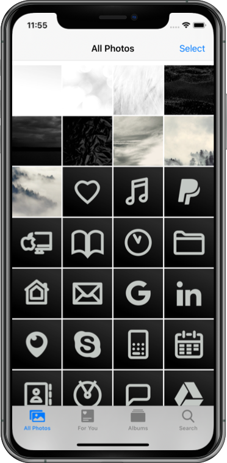
#1. Zuerst die heruntergeladenen Bilder entpacken und die gewünschten Bilder in die Fotos-App ablegen.
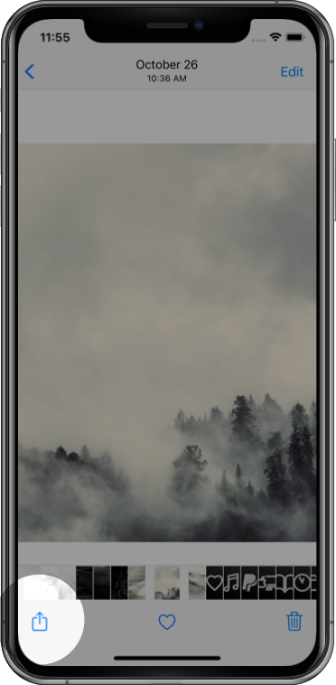
#2. Beim gewünschten Hintergrundebild, die Taste "Teilen" tippen.
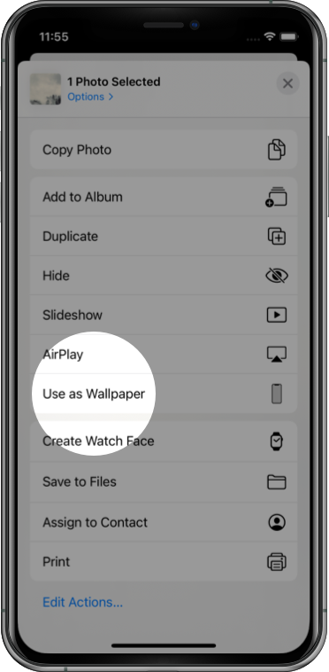
#3. Dann 'Als Hintergrund' tippen.
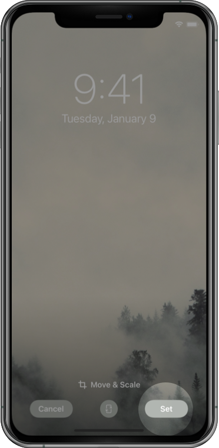
#4. Nun das Bild wie gewünscht positionieren und mit 'Sichern' und 'Beide' aktivieren.
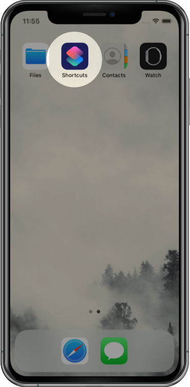
#5. Gehe zum Home-Bildschirm zurück und öffne die 'Kurzbefehle' App.
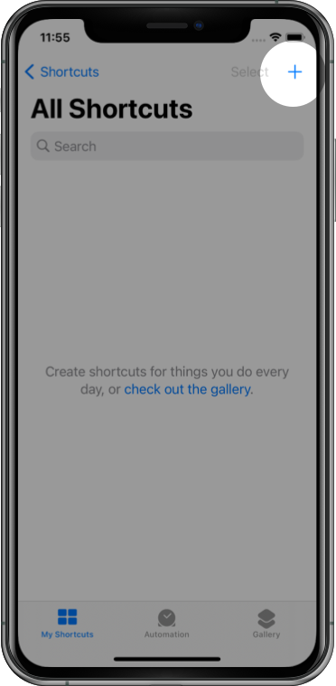
#6. Tippe auf das '+' Symbol um einen neuen Kurzbefehl hinzuzufügen.
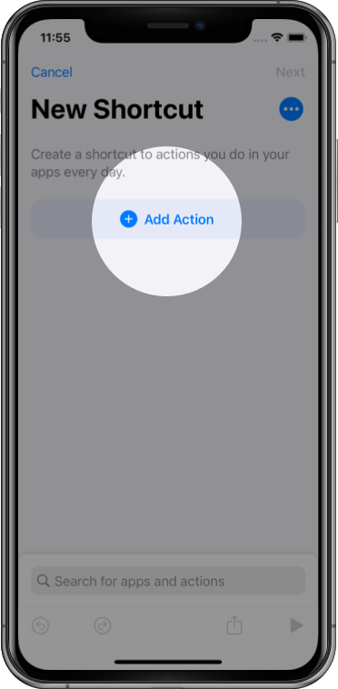
#7. Tippe auf die '+ Aktion hinzufügen' Schaltfläche.
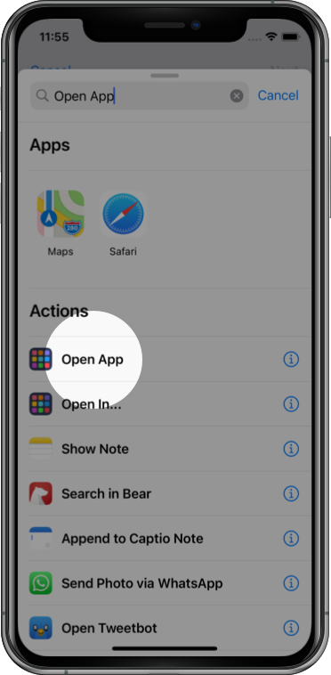
#8. Finde und tippe auf 'App öffnen' (du kannst auch das Textfeld zur suche verwenden).
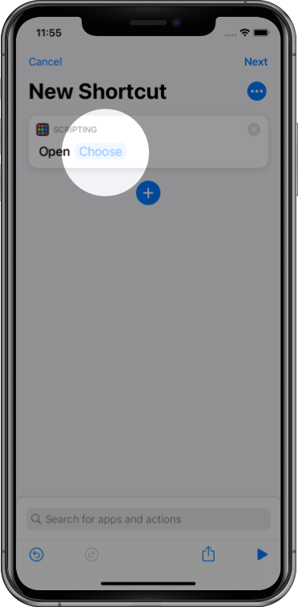
#9. Tippe auf 'Auswählen' und wähle die App aus welche du später durch ein neues Symbol öffnen willst.
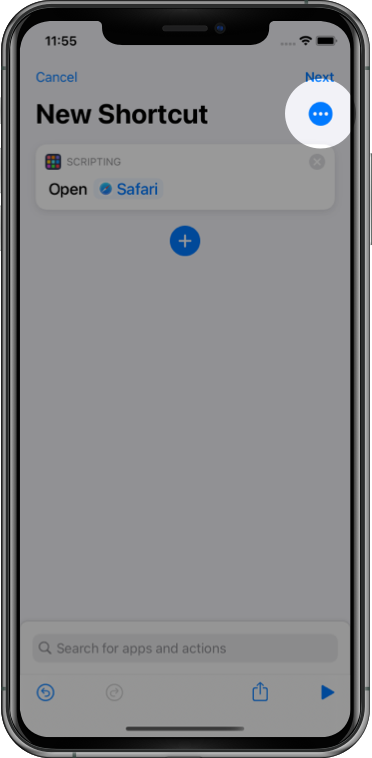
#10. Tippe auf 'Mehr' (drei Punkte) in der oberen rechten Ecke.
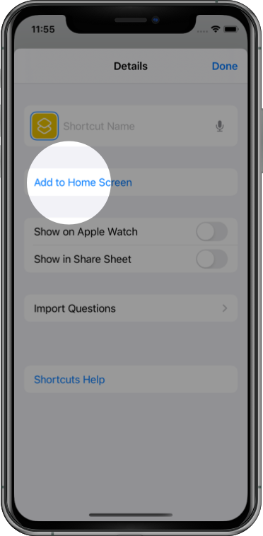
#11. Tippe auf 'Zum Home-Bildschirm'.
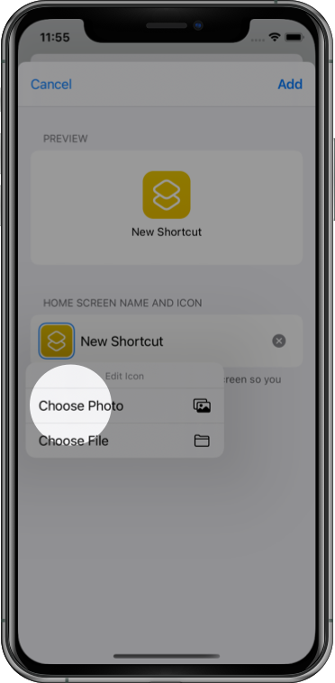
#12. Tippe auf das Platzhaltersymbol unter 'Name und Symbol für Home-Bildschirm' und wähle 'Foto auswählen'. Finde und wähle das gewünschte Symbolbild aus. Optional kann hier ein Name vergeben werden der am Home-Bildschirm angezeigt wird.
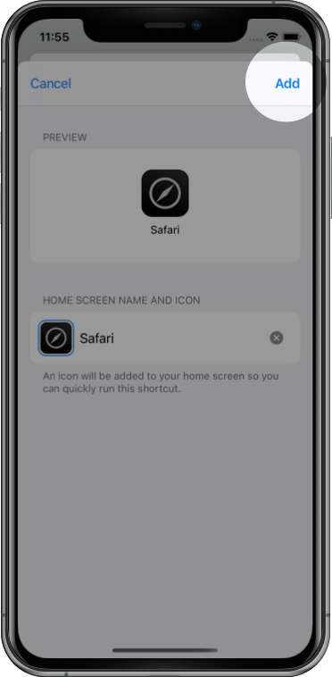
#13. Tippe auf 'Hinzufügen' oben rechts.
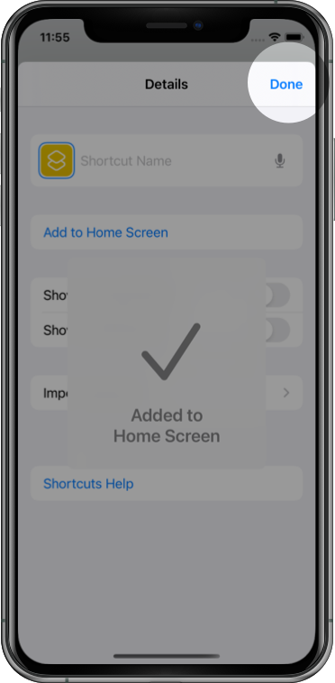
#14. Tippe auf 'Fertig'.
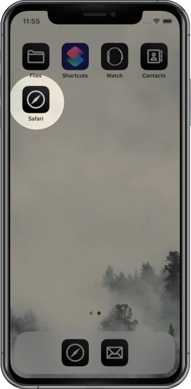
#15. Das neue Symbol sollte schon am Home-Bildschirm zu finden sein. Wiederhole die Schritte 6-14 für jede weitere App die du anpassen möchtest.
Zurück
Weiter